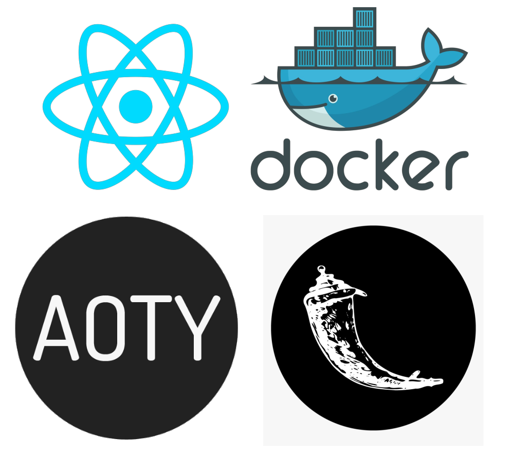
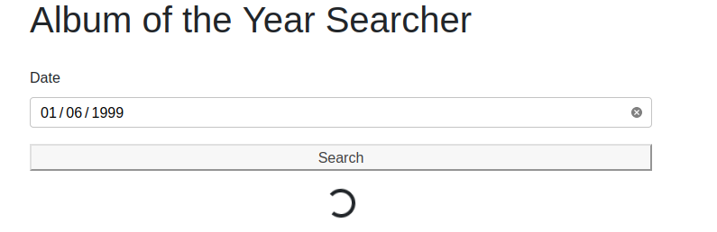
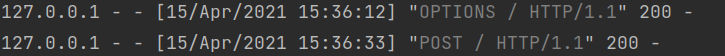
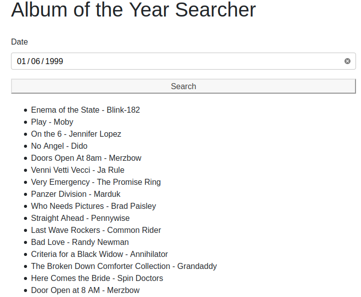

Click here for part 1 of this series.
In this tutorial we'll design an app to find out which albums were released on a specific day. But you'll learn so much more along the way...
In part 1 we answered the question
"Can I find out which albums were released on my birthday?"
You sure can, just read on to find out how.
In part 1 of this guide we brought up that if you can relate to any of these then you're definitely in the right place.
In this guide, the same applies, and in addition, this guide is absolutely for you if you're interested in any of these.
From ReactJS:
A JavaScript library for building user interfaces
From Python Basic - What is Flask Python?:
"Flask is a web application framework written in Python. A Web Application Framework or simply a Web Framework represents a collection of libraries and modules that enable web application developers to write applications without worrying about low-level details"
Looking for source code?
Jump to
the Github Repo
Firstly we'll use create-react-app to generate the template for our frontend
Next we'll customize our frontend interface and set up the functions that send requests to our Flask webserver.
Then we'll adapt our Python console app into a Flask webserver..
We'll wrap up with a discussion of our results and how we could take this further..
If you want to follow along to the tutorial you can take some time to setup your environment by installing Docker using either of these guides
Either will help you setup the required software for this tutorial.
In addition to Docker, you'll also need NodeJs which you can install with either of these guides
You can now move on to creating our React app.
First we can start with a generated single-page
application with the help of create-react-app
npx create-react-app aoty-frontend
cd aoty-frontend
npm startnpx is the package runner tool that comes with npm which is the node package manager installed along
with
NodeJS.
The generated app will now be in the folder aoty-frontend which I would now recommend opening with
your IDE/text editor of choice.
We'll start be rewriting src/App.js. We can change the App() function to
function App() {
return (
<div></div>
);
}Now we can add a heading and the basic html for the form
<div>
<h1>Album of the Year Searcher</h1>
<form action="#">
<label>
Date
<input type="date" name="date" id="date"/>
</label>
<button type="submit" id="submit-date">Search</button>
</form>
</div>Now, under the form we want to add a loading spinner if the app is in the state of searching for albums.
{this.state.searching ?
<div className="text-center">
<div className="spinner-border" role="status">
<span className="sr-only">Loading...</span>
</div>
</div>
: null}The class names are actually Bootstrap specific which is a CSS framework for developing responsive sites.
We'll return to Bootstrap later, but for now, we'll want a way to display the that albums our search found. Just under the previous code we can map over the results returned from our search to list items elements.
{this.state.results.length !== 0 ? (
<ul>{
this.state.results.map((result, i) =>
<li key={i}>{result}</li>
)
}</ul>
) : null}We'll want to take the form submission into our own hands next and add a little styling
<form onSubmit={this.submitHandler.bind(this)} action="#" style={{display: `grid`, gap: `10px`}}>We'll change the App function to a class now, here's where we're at now, also note the new import
import React, {Component} from "react"
class App extends Component {
constructor(props) {
super(props);
this.state = {
results: [],
searching: false,
};
}
render() {
return (
<div>
...
</div>
)
}
}Now we can add the submitHandler function that is called on form submission
async submitHandler(e) {
// Prevent browser's default form submission behaviour
e.preventDefault()
// Extract date from form and split into array
const date = e.target.date.value.split("-")
// Store year, month code, and formatted day from date array
const year = date[0]
const monthCode = date[1]
const day = parseInt(date[2], 10) // 01 becomes 1, etc.
// Create request body
const body = {}
body.day = day
body.month_code = monthCode
body.year = year
// Set searching to true to display loading spinner
this.setState({
searching: true,
})
// Send POST request to backend and await a response
const response = await fetch(`http://localhost:5000/`, {
method: "POST",
headers: {
"Content-Type": "application/json"
},
body: JSON.stringify(body)
})
// If the response is OK then set state to display albums
if (response.status === 200) {
const data = await response.json();
this.setState({
results: data.results,
searching: false,
})
}
}That's essentially all of the work done on the frontend, we can just add some styling now with Bootstrap
As we mentioned earlier... From w3schools - What is Bootstrap?:
"Bootstrap is the most popular CSS Framework for developing responsive and mobile-first websites."
We can open the aoty-frontend folder in the terminal and run npm install react-bootstrap
bootstrap
Inside the <head> tag of public/index.html we can include the Bootstrap CDN link
<head>
...
<link
rel="stylesheet"
href="https://cdn.jsdelivr.net/npm/bootstrap@4.6.0/dist/css/bootstrap.min.css"
integrity="sha384-B0vP5xmATw1+K9KRQjQERJvTumQW0nPEzvF6L/Z6nronJ3oUOFUFpCjEUQouq2+l"
crossorigin="anonymous"
/>
...
</head>And in either src/index,js or src/App.js we can include the following line
import 'bootstrap/dist/css/bootstrap.min.css';Now we can head back to src/App.js and at the top of the file add
import Container from 'react-bootstrap/Container'We'll use Bootstrap and CSS Grid to customise what our App renders now
render() {
return (
<Container>
<div style={{display: `grid`, gap: `20px`}}>
<h1>Album of the Year Searcher</h1>
<form onSubmit={this.submitHandler.bind(this)} action="#" style={{display: `grid`, gap: `10px`}}>
...
</form>
...
</div>
</Container>
)
}We can now move on to programming our Flask backend.
We're essentially rewriting the code from part 1 of the guide but I'll go over the code here too so it isn't required you've read our first part.
A quick way to get up and running is to create a new directory on the terminal with mkdir and open
it with VS Code
sudo mkdir aoty-flask-backend
code aoty-flask-backend We can create a virtual environment within the aoty-flask-backend folder then (I like to open the VS
Code terminal with ctrl+alt+`)
python3 -m venv .venvAnd we can activate the environment with
source .venv/bin/activateFor more info you can check out the official Python documentation on venv
Note that you may need to change python3 to python depending on which version you have
installed.
Next we'll install the necessary packages to get up and running
pip3 install requests flask selenium flask_corsNow we can import the packages
# For handling requests and responses
import requests
import json
from flask import Flask, request
# Selenium imports
from selenium import webdriver
from selenium.common.exceptions import NoSuchElementException, \
StaleElementReferenceException
import time
# To run Docker commands
import os
# To enable requests from the frontend user interface
from flask_cors import CORS, cross_originWe then create and configure the app
# Create Flask instance
app = Flask(__name__)From Flask - Application Setup:
__name__is the name of the current Python module. The app needs to know where it’s located to set up some paths, and__name__is a convenient way to tell it that.
Next, we use the flask_cors module to allow communication between our frontend interface and
backend webserver.
# Enable CORS to permit requests from the frontend to the backend (a different origin)
CORS(app) # Enables CORS for all routes
# Allow Content-Type header
app.config['CORS_HEADERS'] = 'Content-Type'From MDN Web Docs - CORS:
Cross-Origin Resource Sharing (CORS) is an HTTP-header based mechanism that allows a server to indicate any other origins (domain, scheme, or port) than its own from which a browser should permit loading of resources
Next we'll start the Selenium Docker container
# Start Selenium webdriver container
os.system(
'sudo docker run --name my-selenium-container -d -p 4444:4444 -v /dev/shm:/dev/shm selenium/standalone-firefox:4.0.0-beta-1-prerelease-20210210')This command starts a standalone Firefox container. For other browsers and a description of why -v
/dev/shm:/dev/shm is necessary you can visit the Docker Selenium Page.
We've named the container "my-selenium-container" so we can remove it at the end of our program.
Now we'll work on our one and only route. First we'll just get data from the form and format it
@app.route('/', methods=['POST'])
@cross_origin()
def search_albums():
# Get data from form
data = request.json
day = data['day']
month_code = data['month_code']
year = data['year']
month = ''
month_name_short = ''
# Set month and month_name_short based on month_code
if month_code == '01':
month = 'january'
month_name_short = 'Jan'
elif month_code == '02':
month = 'february'
month_name_short = 'Feb'
elif month_code == '03':
month = 'march'
month_name_short = 'Mar'
elif month_code == '04':
month = 'april'
month_name_short = 'Apr'
elif month_code == '05':
month = 'may'
month_name_short = 'May'
elif month_code == '06':
month = 'june'
month_name_short = 'Jun'
elif month_code == '07':
month = 'july'
month_name_short = 'Jul'
elif month_code == '08':
month = 'october'
month_name_short = 'Aug'
elif month_code == '09':
month = 'september'
month_name_short = 'Sep'
elif month_code == '10':
month = 'october'
month_name_short = 'Oct'
elif month_code == '11':
month = 'november'
month_name_short = 'Nov'
elif month_code == '12':
month = 'december'
month_name_short = 'Dec'
# Format release date to search for like "Sep 20"
release_date_to_search = '%s %s' % (month_name_short, day)This command starts a standalone Firefox container. For other browsers and a description of why -v
/dev/shm:/dev/shm is necessary you can visit the Docker Selenium Page.
We've named the container "my-selenium-container" so we can remove it at the end of our program.
The next piece of code is actually very important. When we start our container we need to wait for it to be in a state where it's ready to provide the services we need to use it as our remote webdriver.
ready = False
time.sleep(5)
while not ready:
try:
r = requests.get('http://localhost:4444/wd/hub/status', timeout=1)
status = r.status_code
if status == 200:
ready = True
except ConnectionResetError or ConnectionError:
continueEssentially, we keep hitting the status endpoint until it says it's ready and then we can move on with the rest of our Python script.
driver = webdriver.Remote(desired_capabilities=webdriver.DesiredCapabilities.FIREFOX,
command_executor="http://localhost:4444/wd/hub")We can connect to our remote webdriver on localhost since due to the docker run command -p 4444:4444
which
maps port 4444 of the container to port 4444 of our local machine.
Now we can connect to the remote Firefox webdriver
# Connect to remote Firefox webdriver
driver = webdriver.Remote(desired_capabilities=webdriver.DesiredCapabilities.FIREFOX,
command_executor="http://localhost:4444/wd/hub")And go to the AOTY page for the specified month
# Go to Album of the Year page for specific month
driver.get(
"https://www.albumoftheyear.org/%s/releases/%s-%s.php?s=release&genre=all" % (year, month, month_code))Next we'll code our PySelenium bot to keep clicking the button to load more albums.
all_albums_loaded = False
while not all_albums_loaded:
try:
show_more_button_container = driver.find_element_by_class_name('showMore')
time.sleep(3)
driver.execute_script("arguments[0].click();",
show_more_button_container.find_element_by_class_name('largeButton'))
time.sleep(1)Note we're using the execute_script method as opposed to the click() method of the WebElement
object returned by find_element_by_id
We do this because another element
is covering the show
more button. You can see this
StackOverflow answer by
user RemcoW for more details and an explanation of arguments[0]
We're not quite finished with this while loop just yet, we need to do two things:
continue if our reference becomes stale. This
StackOverflow answer by user Ardesco
describes the situation more clearly.
For completeness, this is our complete while loop
while not all_albums_loaded:
try:
show_more_button_container = driver.find_element_by_class_name('showMore')
time.sleep(3)
driver.execute_script("arguments[0].click();",
show_more_button_container.find_element_by_class_name('largeButton'))
time.sleep(1)
except StaleElementReferenceException:
continue
except NoSuchElementException:
all_albums_loaded = TrueWe can store all albums being displayed in a variable now so we can easily iterate through them.
albums = driver.find_elements_by_class_name('albumBlock')Let's do just that
response = []
# For each album, if the release date matches the date to search for then append it to the response array
for album in albums:
album_release_date = album.find_element_by_class_name('date').text
if album_release_date == release_date_to_search:
album_title = album.find_element_by_class_name('albumTitle').text
artist_title = album.find_element_by_class_name(
'artistTitle').text
response.append('%s - %s' % (album_title, artist_title))This is really our main block of code. We iterate through each album and append to our response
array it's title and artist if it
was released on the day we have specified to search for.
We can do a little housekeeping by returning a message if no albums match the release data and closing our driver connection
# If no albums are found return a message informing the user
if len(response) == 0:
response.append('No albums found')
# Close connection to Firefox webdriver
driver.close()Finally, we'll return our response to the user
# Return response to user
return json.dumps({'results': response}), 200, {'ContentType': 'application/json'}And we'll provide the command to run our Flask app outside of the function
if __name__ == '__main__':
app.run()Congrats! Now let's see the results of our hard work in the next section.
You can find all the source code for this guide here.
Let's try searching for the albums released on a certain date to see our results.
Inside the virtual environment, we can run
python3 app.pyto start our webserver
If you've followed along and used sudo in the docker run command you'll be prompted for your
password and then we can move to our frontend application at http://localhost:3000
Now we can enter a date and search
We can see the requests has been successful on the backend
And the results come back to the user on the frontend
Remember you can grab the source code so you can take this and run with it adapting it however you like, read on to find out what my plans are for this project and ideas about where this could go next.
We can improve our frontend by designing with our users in mind with an interface integrating the album covers and we could even add filtering by genre.
Another possible challenge to take on would be deployment using services such as Heroku and Netlify.
Stay tuned to my blog, you don't want to miss out!
Here's some resources for resolving common errors you might run into along the way in this guide or in your own explorations.
requests.exceptions.ConnectionError: ('Connection aborted.',
ConnectionResetError(104, 'Connection reset
by peer')) - this is a common error coined The
Python "Connection Rest By Peer" Problem. You can
read more about it in this
StackOverflow post by user
S.Lott. In our case it will likely arise from trying to access the status endpoint of the Selenium
container before the container is ready. You can use time.sleep(1)
before making a request to http://localhost:4444/wd/hub/status and adjusting the time to fit
your needs.
pip: command not found - this is likely a problem relating to your
environment as described (along with solutions) in this post by James Gallagher on
Career Karma. It may be as simple as changing pip to pip3 or you may need
to actually install pip3, for example with apt-get sudo apt-get -y install python3-pip
StaleElementReferenceException - our WebElement can be destroyed and
re-rendered in
the DOM so we'll need to retry by using continue if our reference becomes stale. This StackOverflow answer by user Ardesco
describes the situation more clearly. We can catch this exception in an except block and tell our code to retry a certain operation until the
exception doesn't occur. You can see the
example we've used in this
guide where
our solution was to use the
continue keyword inside a while
loop.
Element is not clickable at point (x,y) because another element obscures
it - You can see this
StackOverflow answer by
user RemcoW for more details and an explanation of our solution in this guide which was to use driver.execute_script("arguments[0].click();", element) as opposed to the
click() method of the WebElement
object returned by find_element_by_idFailed to connect to localhost port 4444: Connection refused - If you're
planning
to access the Selenium webdriver endpoint from within a different Docker container you can change
http://localhost:4444/wd/hub to http://172.17.0.1:4444/wd/hub or
http://host.docker.internal:4444/wd/hub. The
rationale behind this is provided in this
StackOverflow answer by user devnev.
requests.exceptions.ConnectionError: HTTPConnectionPool(host='localhost',
port=4444): Max retries exceeded with url: /wd/hub/status - to solve this error you should run sudo
docker rm -f my-selenium-container